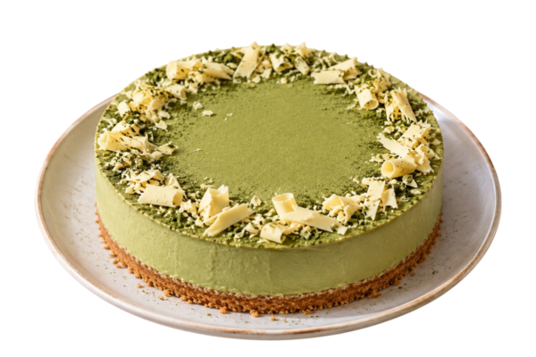
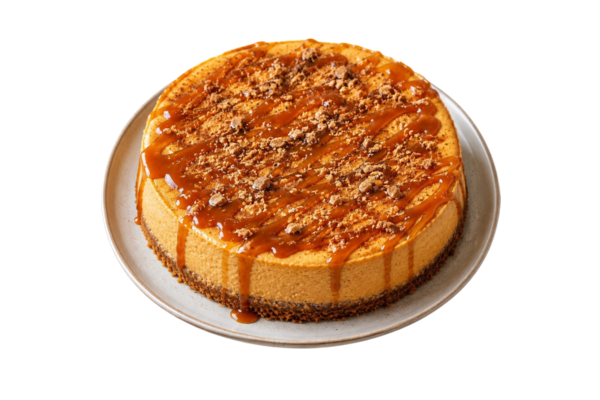

ЧИЗКЕЙКОВАЯ
Домашние чизкейки на заказ - от классики Нью Йорк до авторских вкусов
Готовим вручную из натурального сливочного сыра, свежих ягод и настоящего шоколада. Доставляем по городу — к празднику, свиданию или просто так.
КАТАЛОГ ЗАКАЗАТЬПочему выбирают "Чизкейковую"
- Только натуральные ингредиенты — без растительных сливок и загустителей
- Печём под заказ — чизкейк приезжает свежим, а не с витрины
- 12 авторских вкусов — от классики до матча-лаванды
- Доставка по городу в течение 2 часов
- Упаковка с хладоэлементом — довозим без повреждений
Наши чизкейки
- Классические
- Нью-Йорк — сливочная классика с идеальным балансом сладости и кислинки
- Филадельфия — нежнее, с более лёгкой текстурой
- Ванильный — чистая классика с натуральной ванилью
- Авторские
- Матча — зелёный чай и белый шоколад
- Лавандовый — с цветочным ароматом и ягодным соусом
- Шоколадный — с бельгийским шоколадом и какао-основой
- Сезонные
- Тыквенный — уютный осенний вкус тыквы и специй
- Черничный — насыщенный ягодный вкус
- Имбирный пряник — пряный вкус десерта к холодным вечерам
Сравнение вкусов |
|||||
| Фото | Название | Основа | Топпинг | Калорийность | Подробнее |
|---|---|---|---|---|---|

|
Нью-Йорк |
песочная |
ягодный соус |
340 ккал |
|
|
 |
Матча |
песочная |
белый шоколад |
380 ккал |
|
|
 |
Тыквенный |
песочная |
карамель |
420 ккал |
|